Legendre Polynomials¶
Legendre polynomials 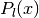 defined by the Rodrigues’s formula
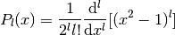
they also obey the completeness relation
(1)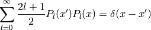
and orthogonality relation:

Two Legendre polynomials can be expanded in a series:
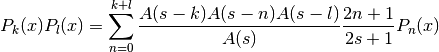
where 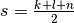 and
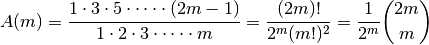
This can be proven by induction, see [Adams]. We can now calculate the integral of three Legendre polynomials:
(2)![\int_{-1}^1 P_k(x) P_l(x) P_m(x) \d x =
= \int_{-1}^1
\sum_{n=0}^{k+l} {A(s-k) A(s-n) A(s-l)\over A(s)}
{2n+1\over 2s+1} P_n(x)
P_m(x) \d x =
= \sum_{n=0}^{k+l} {A(s-k) A(s-n) A(s-l)\over A(s)}
{2n+1\over 2s+1}
\int_{-1}^1 P_n(x) P_m(x) \d x =
= \sum_{n=0}^{k+l} {A(s-k) A(s-n) A(s-l)\over A(s)}
{2n+1\over 2s+1}
{2\over 2n+1} \delta_{nm} =
= 2 {A(s-k) A(s-l) A(s-m)\over A(s)} {1\over 2s+1} =
= 2 {
{1\over2^{s-k}}\binom{2s-2k}{s-k}
{1\over2^{s-l}}\binom{2s-2l}{s-l}
{1\over2^{s-m}}\binom{2s-2m}{s-m}
\over
{1\over2^{s}}\binom{2s}{s}
} {1\over 2s+1} =
= 2 {2^s\over2^{s-k+s-l+s-m}} {
\binom{2s-2k}{s-k}
\binom{2s-2l}{s-l}
\binom{2s-2m}{s-m}
\over
\binom{2s}{s}
} {1\over 2s+1} =
= 2 {
\binom{2s-2k}{s-k}
\binom{2s-2l}{s-l}
\binom{2s-2m}{s-m}
\over
\binom{2s}{s}
} {1\over 2s+1} =
= 2 {
{(2s-2k)! \over ((s-k)!)^2}
{(2s-2l)! \over ((s-l)!)^2}
{(2s-2m)! \over ((s-m)!)^2}
{(s!)^2 \over (2s)!}
} {1\over 2s+1} =
= 2 {(2s-2k)! (2s-2l)! (2s-2m)! \over (2s+1)!}
\left[{s! \over (s-k)! (s-l)! (s-m)!}\right]^2
=
= 2 \begin{pmatrix} k & l & m \\ 0 & 0 & 0 \end{pmatrix}^2](../../_images/math/ed5fc9a4b38412ba13480cfef9955784f5e387e6.png)
As such, we can write the series expansion as:
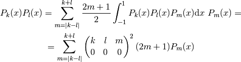
| [Adams] | Adams, J. C. (1878). On the Expression of the Product of Any Two Legendre’s Coefficients by Means of a Series of Legendre’s Coefficients. Proceedings of the Royal Society of London, 27, 63-71. |
Spherical Harmonics¶
Are defined by
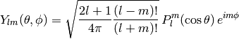
where  are associated Legendre polynomials defined by
are associated Legendre polynomials defined by
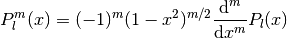
and 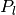 are Legendre polynomials. Sometimes the spherical harmonics are written as:
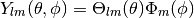
where:
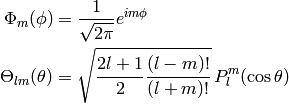
The spherical harmonics are ortonormal:
(3)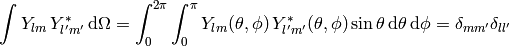
and complete (both in the  -subspace and the whole space):
-subspace and the whole space):
(4)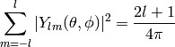
(5)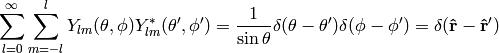
The relation (4) is a special case of an addition theorem for spherical harmonics
(6)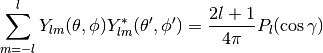
where  is the angle between the unit vectors given by 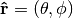 and 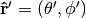:
is the angle between the unit vectors given by 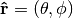 and 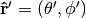:
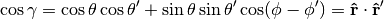
Relations between complex conjugates is:
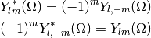
Examples¶
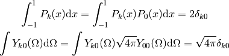
Gaunt Coefficients¶
We use the Wigner-Eckart theorem:
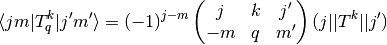
Where:

In order to calculate the reduced matrix element 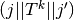, we evaluate the W-E theorem for 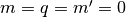:
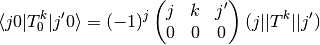
and also evaluate the left hand side explicitly:
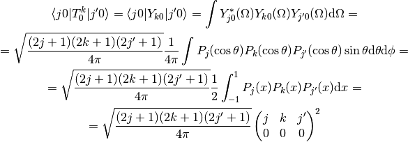
where we used (2). Comparing these two results, we get:
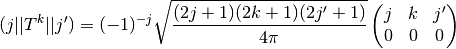
and finally:
![\int Y_{jm}^*(\Omega) Y_{kq}(\Omega) Y_{j'm'}(\Omega) \d \Omega =
=\braket{j m | T^k_q | j' m'} = (-1)^{j-m}
\begin{pmatrix} j & k & j' \\ -m & q & m' \end{pmatrix}
(j || T^k || j') =
= (-1)^{j-m}
\begin{pmatrix} j & k & j' \\ -m & q & m' \end{pmatrix}
(-1)^{-j}
\sqrt{(2j+1)(2k+1)(2j'+1)\over 4\pi}
\begin{pmatrix} j & k & j' \\ 0 & 0 & 0 \end{pmatrix} =
= (-1)^{-m}
\sqrt{(2j+1)(2k+1)(2j'+1)\over 4\pi}
\begin{pmatrix} j & k & j' \\ 0 & 0 & 0 \end{pmatrix}
\begin{pmatrix} j & k & j' \\ -m & q & m' \end{pmatrix}](../../_images/math/3017b7c5cbfaf1fc0e670c23b475e5405d72cdad.png)
In order to evaluate other integrals of spherical harmonics, we just use the above result, for example:
![\int Y_{l_1 m_1}(\Omega) Y_{l_2 m_2}(\Omega) Y_{l_3 m_3}(\Omega) \d\Omega =
=(-1)^{m_1}\int Y_{l_1 -m_1}^*(\Omega) Y_{l_2 m_2}(\Omega)
Y_{l_3 m_3}(\Omega) \d\Omega=
=(-1)^{m_1}
(-1)^{-(-m_1)}
\sqrt{(2l_1+1)(2l_2+1)(2l_3+1)\over 4\pi}
\begin{pmatrix} l_1 & l_2 & l_3 \\ 0 & 0 & 0 \end{pmatrix}
\begin{pmatrix} l_1 & l_2 & l_3 \\ -(-m_1) & m_2 & m_3 \end{pmatrix}=
= \sqrt{(2l_1+1)(2l_2+1)(2l_3+1)\over 4\pi}
\begin{pmatrix} l_1 & l_2 & l_3 \\ 0 & 0 & 0 \end{pmatrix}
\begin{pmatrix} l_1 & l_2 & l_3 \\ m_1 & m_2 & m_3 \end{pmatrix}](../../_images/math/b43fb7bc105bd36f6dbcd4ad5726a02bc94d7396.png)
This is the most symmetric relation. It was first obtained by [Gaunt] (equation (9), p. 194, where he expanded the 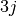 symbols, so his formula is more complex but equivalent to the above).
It is useful to incorporate the selection rule 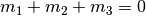 of the symbols into the formula and we get:

From the other selection rules of the symbols it follows, that the 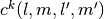 coefficients are nonzero only when:
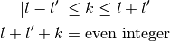
| [Gaunt] | Gaunt, J. A. (1929). The Triplets of Helium. Philosophical Transactions of the Royal Society of London, 228, 151-196. |
Example I¶
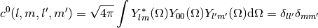
Example II¶
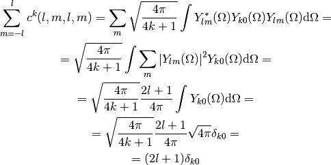
Example III¶
![c^k(l, m, l', m') =
\sqrt{4\pi \over 4k+1}
\int Y_{lm}^*(\Omega) Y_{k, m-m'}(\Omega) Y_{l'm'}(\Omega) \d\Omega =
= \sqrt{4\pi \over 4k+1}
\int \Theta_{lm}\Phi_m^* \Theta_{k, m-m'}\Phi_{m-m'} \Theta_{l'm'}\Phi_{m'}
\sin\theta \d\theta \d\phi =
= \sqrt{4\pi \over 4k+1}
\int_0^\pi \Theta_{lm} \Theta_{k, m-m'} \Theta_{l'm'} \sin\theta \d\theta
\int_0^{2\pi} \Phi_m^* \Phi_{m-m'} \Phi_{m'} \d\phi =
= \sqrt{4\pi \over 4k+1}
\int_0^\pi \Theta_{lm} \Theta_{k, m-m'} \Theta_{l'm'} \sin\theta \d\theta
\left(1\over\sqrt{2\pi}\right)^3
\int_0^{2\pi} e^{-im\phi} e^{i(m-m')\phi} e^{im'\phi} \d\phi =
= \sqrt{4\pi \over 4k+1}
\int_0^\pi \Theta_{lm} \Theta_{k, m-m'} \Theta_{l'm'} \sin\theta \d\theta
\left(1\over\sqrt{2\pi}\right)^3
\int_0^{2\pi} \!\!\!\d\phi =
= \sqrt{2\over 4k+1}
\int_0^\pi \Theta_{lm} \Theta_{k, m-m'} \Theta_{l'm'} \sin\theta \d\theta](../../_images/math/0708dc3eee036ecfb5dd94b55b1cdcb5c7bbf894.png)
Example IV¶

Where we used the fact, that 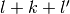 is an even integer and 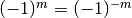. 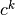 is not symmetric in 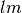 and 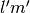:
![c^k(l', m', l, m)
= (-1)^{-m'}
\sqrt{(2l'+1)(2l+1)}
\begin{pmatrix} l' & k & l \\ 0 & 0 & 0 \end{pmatrix}
\begin{pmatrix} l' & k & l \\ -m' & m'-m & m \end{pmatrix} =
= (-1)^{-m'}
\sqrt{(2l+1)(2l'+1)}
\begin{pmatrix} l & k & l' \\ 0 & 0 & 0 \end{pmatrix}
\begin{pmatrix} l & k & l' \\ m & m'-m & -m' \end{pmatrix} =
= (-1)^{-m'}
\sqrt{(2l+1)(2l'+1)}
\begin{pmatrix} l & k & l' \\ 0 & 0 & 0 \end{pmatrix}
\begin{pmatrix} l & k & l' \\ -m & m-m' & m' \end{pmatrix} =
= (-1)^{m-m'} (-1)^{-m}
\sqrt{(2l+1)(2l'+1)}
\begin{pmatrix} l & k & l' \\ 0 & 0 & 0 \end{pmatrix}
\begin{pmatrix} l & k & l' \\ -m & m-m' & m' \end{pmatrix} =
= (-1)^{m-m'} c^k(l, m, l', m')](../../_images/math/9e603272c827c46419a95b5aff17c3c70932fb2a.png)
Few other identities:
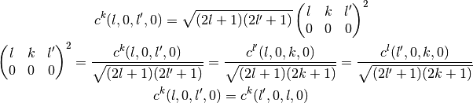
Example V¶
![\sum_{m'} \left(c^k(l, m, l', m')\right)^2 =
= \sum_{m'}
(2l+1)(2l'+1)
\begin{pmatrix} l & k & l' \\ 0 & 0 & 0 \end{pmatrix}^2
\begin{pmatrix} l & k & l' \\ -m & m-m' & m' \end{pmatrix}^2 =
=
(2l+1)(2l'+1)
\begin{pmatrix} l & k & l' \\ 0 & 0 & 0 \end{pmatrix}^2
\sum_{m'}
\begin{pmatrix} l & k & l' \\ -m & m-m' & m' \end{pmatrix}^2 =
=
(2l+1)(2l'+1)
\begin{pmatrix} l & k & l' \\ 0 & 0 & 0 \end{pmatrix}^2
{1\over 2l+1} =
=
(2l'+1)
\begin{pmatrix} l & k & l' \\ 0 & 0 & 0 \end{pmatrix}^2
=
=\sqrt{2l'+1\over 2l+1} c^k(l', 0, l, 0)](../../_images/math/b9f5ea9ce0f8324113681b0946e2ee60b2a687eb.png)
![\sum_{m'}\sum_{q}\int
Y_{l'm'}(\Omega)
Y_{l'm'}^*(\Omega')
Y_{kq}(\Omega)
Y_{kq}^*(\Omega')
Y_{lm}(\Omega')
\d \Omega' =
=\int
{2l'+1\over 4\pi} P_{l'}({\bf x}\cdot{\bf x}')
{2k+1\over 4\pi} P_k({\bf x}\cdot{\bf x}')
Y_{lm}(\Omega')
\d \Omega' =
=\int
{2l'+1\over 4\pi}
{2k+1\over 4\pi}
\sum_{\lambda=|l'-k|}^{\lambda=l'+k}
\sqrt{2\lambda+1\over 2l'+1} c^k(l', 0, \lambda, 0)
{4\pi \over 2\lambda+1}
\sum_{\mu=-\lambda}^\lambda
Y_{\lambda\mu}^*(\Omega')
Y_{\lambda\mu}(\Omega)
Y_{lm}(\Omega')
\d \Omega' =
=
{2l'+1\over 4\pi}
{2k+1\over 4\pi}
\sum_{\lambda=|l'-k|}^{\lambda=l'+k}
\sqrt{2\lambda+1\over 2l'+1} c^k(l', 0, \lambda, 0)
{4\pi \over 2\lambda+1}
\sum_{\mu=-\lambda}^\lambda
Y_{\lambda\mu}(\Omega)
\delta_{\lambda l}
\delta_{\mu m}
=
=
{2k+1\over 4\pi}
\sqrt{2l'+1\over 2l+1} c^k(l', 0, l, 0)
Y_{lm}(\Omega)](../../_images/math/31000c1263f6e62b8203cb8ff18f9400eab5d2d7.png)
![\sum_{m'}
Y_{l'm'}(\Omega)
Y_{l'm'}^*(\Omega')
= {2l'+1\over 4\pi} P_{l'}({\bf x}\cdot{\bf x}')
\sum_{q}
Y_{kq}(\Omega)
Y_{kq}^*(\Omega')
= {2k+1\over 4\pi} P_k({\bf x}\cdot{\bf x}')
P_k({\bf x}\cdot{\bf x}')P_{l'}({\bf x}\cdot{\bf x}')
= \sum_{\lambda=|l'-k|}^{l'+k}
\begin{pmatrix} k & l' & \lambda \\ 0 & 0 & 0 \end{pmatrix}^2
(2\lambda+1) P_\lambda({\bf x}\cdot{\bf x}') =
= \sum_{\lambda=|l'-k|}^{\lambda=l'+k}
\sqrt{2\lambda+1\over 2l'+1} c^k(l', 0, \lambda, 0)
P_\lambda({\bf x}\cdot{\bf x}') =
= \sum_{\lambda=|l'-k|}^{\lambda=l'+k}
\sqrt{2\lambda+1\over 2l'+1} c^k(l', 0, \lambda, 0)
{4\pi \over 2\lambda+1}
\sum_{\mu=-\lambda}^\lambda
Y_{\lambda\mu}^*(\Omega')
Y_{\lambda\mu}(\Omega)](../../_images/math/dfb2a14f9ea6d9c4cf1be9ddc3704ad84fbc7a41.png)
Wigner 3j Symbols¶
Relation between the Wigner symbols and Clebsch-Gordan coefficients:
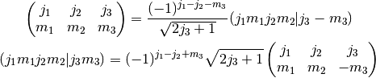
They are nonzero only when:
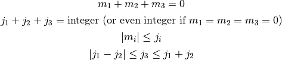
They have lots of symmetries. The symbol is invariant for an even permutation of columns:
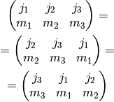
For an odd permutation of columns it changes sign if 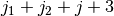 is an odd integer:
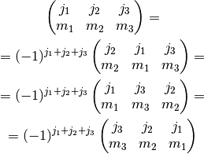
and the same if you change the sign of the second row:
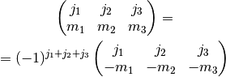
Orthogonality relations:
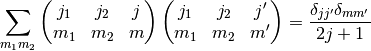
As a special case, we get:
(8)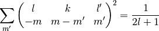
Here is a script to check that the equation (8) works:
from sympy import S
from sympy.physics.wigner import wigner_3j
def doit(l, k, lp, m):
s = 0
for mp in range(-lp, lp+1):
s += wigner_3j(l, k, lp, -m, m-mp, mp)**2
print "%2d %2d %2d %2d " % (l, k, lp, m), s, " ", S(1)/(2*l+1)
k = 4
lp = 3
print " l k lp m: lhs rhs"
for l in range(1, 6):
for m in range(-l, l+1):
doit(l, k, lp, m)
it prints:
l k lp m: lhs rhs
1 4 3 -1 1/3 1/3
1 4 3 0 1/3 1/3
1 4 3 1 1/3 1/3
2 4 3 -2 1/5 1/5
2 4 3 -1 1/5 1/5
2 4 3 0 1/5 1/5
2 4 3 1 1/5 1/5
2 4 3 2 1/5 1/5
3 4 3 -3 1/7 1/7
3 4 3 -2 1/7 1/7
3 4 3 -1 1/7 1/7
3 4 3 0 1/7 1/7
3 4 3 1 1/7 1/7
3 4 3 2 1/7 1/7
3 4 3 3 1/7 1/7
4 4 3 -4 1/9 1/9
4 4 3 -3 1/9 1/9
4 4 3 -2 1/9 1/9
4 4 3 -1 1/9 1/9
4 4 3 0 1/9 1/9
4 4 3 1 1/9 1/9
4 4 3 2 1/9 1/9
4 4 3 3 1/9 1/9
4 4 3 4 1/9 1/9
5 4 3 -5 1/11 1/11
5 4 3 -4 1/11 1/11
5 4 3 -3 1/11 1/11
5 4 3 -2 1/11 1/11
5 4 3 -1 1/11 1/11
5 4 3 0 1/11 1/11
5 4 3 1 1/11 1/11
5 4 3 2 1/11 1/11
5 4 3 3 1/11 1/11
5 4 3 4 1/11 1/11
5 4 3 5 1/11 1/11
Multipole expansion¶
Assuming 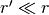:
![{1\over |{\bf r}-{\bf r'}|} ={1\over \sqrt{({\bf r}-{\bf r'})^2}} ={1\over \sqrt{r^2-2{\bf r}\cdot {\bf r'} + r'^2}} ={1\over r\sqrt{1-2\left(r'\over r\right){\bf\hat r}\cdot {\bf\hat r'} + \left(r'\over r\right)^2}} =
={1\over r}\sum_{l=0}^\infty\left(r'\over r\right)^l P_l({\bf\hat r}\cdot {\bf\hat r'}) =
={1\over r}\left( P_0({\bf\hat r}\cdot {\bf\hat r'}) + P_1({\bf\hat r}\cdot {\bf\hat r'}){r'\over r} + P_2({\bf\hat r}\cdot {\bf\hat r'})\left(r'\over r\right)^2 + O\left(r'^3\over r^3\right) \right) =
={1\over r}\left( 1 + {\bf\hat r}\cdot {\bf\hat r'} {r'\over r} + \half\left(3({\bf\hat r}\cdot {\bf\hat r'})^2-1\right)\left(r'\over r\right)^2 + O\left(r'^3\over r^3\right) \right) =
={1\over r} +{{\bf r}\cdot {\bf r'}\over r^3} +{3({\bf r}\cdot {\bf r'})^2-r^2r'^2\over 2r^5} + O\left(r'^3\over r^4\right)](../../_images/math/748018f3dece67a098dceebf2a0e4c9cbfdd29b4.png)
We can also use the formula:
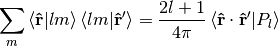
and rewrite the expansion using spherical harmonics:
Assuming we get:
We can combine the two formulas by introducing and
and then for any  and we get:
and we get: